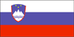

{kind=link}


![[Country map of Slovenia]](../maps/si-map.jpg)
| Slovenia |  |
|
| | |
| Introduction |
Background: In 1918 the Slovenes joined the Serbs and Croats in forming a new nation, renamed Yugoslavia in 1929. After World War II, Slovenia became a republic of the renewed Yugoslavia, which though communist, distanced itself from Moscow's rule. Dissatisfied with the exercise of power of the majority Serbs, the Slovenes succeeded in establishing their independence in 1991. Historical ties to Western Europe make Slovenia a candidate for future membership in the EU.
| Geography |
Location: Southeastern Europe, eastern Alps bordering the Adriatic Sea, between Austria and Croatia
Geographic coordinates: 46 00 N, 15 00 E
Map references: Europe
Area:
total:
20,253 sq km
land:
20,253 sq km
water:
0 sq km
Area - comparative: slightly smaller than New Jersey
Land boundaries:
total:
1,334 km
border countries:
Austria 330 km, Croatia 670 km, Italy 232 km, Hungary 102 km
Coastline: 46.6 km
Maritime claims: NA
Climate: Mediterranean climate on the coast, continental climate with mild to hot summers and cold winters in the plateaus and valleys to the east
Terrain: a short coastal strip on the Adriatic, an alpine mountain region adjacent to Italy and Austria, mixed mountain and valleys with numerous rivers to the east
Elevation extremes:
lowest point:
Adriatic Sea 0 m
highest point:
Triglav 2,864 m
Natural resources: lignite coal, lead, zinc, mercury, uranium, silver, hydropower
Land use:
arable land:
12%
permanent crops:
3%
permanent pastures:
24%
forests and woodland:
54%
other:
7% (1996 est.)
Irrigated land: 20 sq km (1993 est.)
Natural hazards: flooding and earthquakes
Environment - current issues: Sava River polluted with domestic and industrial waste; pollution of coastal waters with heavy metals and toxic chemicals; forest damage near Koper from air pollution (originating at metallurgical and chemical plants) and resulting acid rain
Environment - international agreements:
party to:
Air Pollution, Air Pollution-Sulphur 94, Biodiversity, Climate Change, Endangered Species, Hazardous Wastes, Law of the Sea, Marine Dumping, Nuclear Test Ban, Ozone Layer Protection, Ship Pollution, Wetlands
signed, but not ratified:
Air Pollution-Persistent Organic Pollutants, Climate Change-Kyoto Protocol
| People |
Population: 1,927,593 (July 2000 est.)
Age structure:
0-14 years:
16% (male 162,932; female 154,513)
15-64 years:
69% (male 678,502; female 660,637)
65 years and over:
15% (male 98,739; female 172,270) (2000 est.)
Population growth rate: 0.12% (2000 est.)
Birth rate: 9.35 births/1,000 population (2000 est.)
Death rate: 9.9 deaths/1,000 population (2000 est.)
Net migration rate: 1.75 migrant(s)/1,000 population (2000 est.)
Sex ratio:
at birth:
1.06 male(s)/female
under 15 years:
1.05 male(s)/female
15-64 years:
1.03 male(s)/female
65 years and over:
0.57 male(s)/female
total population:
0.95 male(s)/female (2000 est.)
Infant mortality rate: 4.56 deaths/1,000 live births (2000 est.)
Life expectancy at birth:
total population:
74.86 years
male:
70.97 years
female:
78.97 years (2000 est.)
Total fertility rate: 1.28 children born/woman (2000 est.)
Nationality:
noun:
Slovene(s)
adjective:
Slovenian
Ethnic groups: Slovene 88%, Croat 3%, Serb 2%, Bosniak 1%, Yugoslav 0.6%, Hungarian 0.4%, other 5% (1991)
Religions: Roman Catholic 70.8% (including Uniate 2%), Lutheran 1%, Muslim 1%, atheist 4.3%, other 22.9%
Languages: Slovenian 91%, Serbo-Croatian 6%, other 3%
Literacy:
definition:
NA
total population:
99%
male:
NA%
female:
NA%
| Government |
Country name:
conventional long form:
Republic of Slovenia
conventional short form:
Slovenia
local long form:
Republika Slovenije
local short form:
Slovenija
Data code: SI
Government type: parliamentary democratic republic
Capital: Ljubljana
Administrative divisions: 136 municipalities (obcine, singular - obcina) and 11 urban municipalities* (obcine mestne, singular - obcina mestna) Ajdovscina, Beltinci, Bled, Bohinj, Borovnica, Bovec, Brda, Brezice, Brezovica, Cankova-Tisina, Celje*, Cerklje na Gorenjskem, Cerknica, Cerkno, Crensovci, Crna na Koroskem, Crnomelj, Destrnik-Trnovska Vas, Divaca, Dobrepolje, Dobrova-Horjul-Polhov Gradec, Dol pri Ljubljani, Domzale, Dornava, Dravograd, Duplek, Gorenja Vas-Poljane, Gorisnica, Gornja Radgona, Gornji Grad, Gornji Petrovci, Grosuplje, Hodos Salovci, Hrastnik, Hrpelje-Kozina, Idrija, Ig, Ilirska Bistrica, Ivancna Gorica, Izola, Jesenice, Jursinci, Kamnik, Kanal, Kidricevo, Kobarid, Kobilje, Kocevje, Komen, Koper*, Kozje, Kranj*, Kranjska Gora, Krsko, Kungota, Kuzma, Lasko, Lenart, Lendava, Litija, Ljubljana*, Ljubno, Ljutomer, Logatec, Loska Dolina, Loski Potok, Luce, Lukovica, Majsperk, Maribor*, Medvode, Menges, Metlika, Mezica, Miren-Kostanjevica, Mislinja, Moravce, Moravske Toplice, Mozirje, Murska Sobota*, Muta, Naklo, Nazarje, Nova Gorica*, Novo Mesto*, Odranci, Ormoz, Osilnica, Pesnica, Piran, Pivka, Podcetrtek, Podvelka-Ribnica, Postojna, Preddvor, Ptuj*, Puconci, Race-Fram, Radece, Radenci, Radlje ob Dravi, Radovljica, Ravne-Prevalje, Ribnica, Rogasevci, Rogaska Slatina, Rogatec, Ruse, Semic, Sencur, Sentilj, Sentjernej, Sentjur pri Celju, Sevnica, Sezana, Skocjan, Skofja Loka, Skofljica, Slovenj Gradec*, Slovenska Bistrica, Slovenske Konjice, Smarje pri Jelsah, Smartno ob Paki, Sostanj, Starse, Store, Sveti Jurij, Tolmin, Trbovlje, Trebnje, Trzic, Turnisce, Velenje*, Velike Lasce, Videm, Vipava, Vitanje, Vodice, Vojnik, Vrhnika, Vuzenica, Zagorje ob Savi, Zalec, Zavrc, Zelezniki, Ziri, Zrece
Independence: 25 June 1991 (from Yugoslavia)
National holiday: National Statehood Day, 25 June (1991)
Constitution: adopted 23 December 1991, effective 23 December 1991
Legal system: based on civil law system
Suffrage: 18 years of age; universal (16 years of age, if employed)
Executive branch:
chief of state:
President Milan KUCAN (since 22 April 1990)
head of government:
Prime Minister Janez DRNOVSEK (since 14 May 1992)
cabinet:
Council of Ministers nominated by the prime minister and elected by the National Assembly
elections:
president elected by popular vote for a five-year term; election last held 24 November 1997 (next to be held NA 2002); following National Assembly elections, the leader of the majority party or the leader of a majority coalition is usually nominated to become prime minister by the president and elected by the National Assembly; election last held 10 November 1996 (next to be held NA November 2000)
election results:
Milan KUCAN elected president; percent of vote - Milan KUCAN 56.3%, Janez PODOBNIK 18%; Janez DRNOVSEK elected prime minister; percent of National Assembly vote - 51%
Legislative branch:
unicameral National Assembly or Drzavni Zbor (90 seats, 40 are directly elected and 50 are selected on a proportional basis; note - the numbers of directly elected and proportionally elected seats varies with each election; members are elected by popular vote to serve four-year terms)
elections:
National Assembly - last held 10 November 1996 (next to be held in the fall of 2000)
election results:
percent of vote by party - LDS 27.01%, SLS 19.38%, SDS 16.13%, SKD 9.62%, ZLSD 9.03%, DeSUS 4.32%, SNS 3.22%; seats by party - LDS 25, SLS 19, SDS 16, SKD 10, ZLSD 9, DeSUS 5, SNS 4, Hungarian minority 1, Italian minority 1; note - seating as of January 1997 is as follows: LDS 25, SLS 19, SDS 16, SKD 9, ZLSD 9, DeSUS 5, SNS 4, Hungarian minority 1, Italian minority 1, independents 1
note:
the National Council or Drzavni Svet is an advisory body with limited legislative powers; it may propose laws and ask to review any National Assembly decisions; in the election of NA November 1997, 40 members were elected to represent local, professional, and socioeconomic interests (next election to be held in the fall of 2002)
Judicial branch: Supreme Court, judges are elected by the National Assembly on the recommendation of the Judicial Council; Constitutional Court, judges elected for nine-year terms by the National Assembly and nominated by the president
Political parties and leaders: Democratic Party of Retired (Persons) of Slovenia or DeSUS [Joze GLOBACNIK]; Liberal Democratic or LDS [Janez DRNOVSEK, chairman]; Slovene Christian Democrats or SKD [Lozje PETERLE, chairman]; Slovene National Party or SNS [Zmago JELINCIC, chairman]; Slovene People's Party or SLS [Marjan PODOBNIK, chairman]; Social Democratic Party of Slovenia or SDS [Janez JANSA, chairman]; United List (former Communists and allies) or ZLSD [Janez KOCIJANCIC, chairman]
International organization participation: BIS, CCC, CE, CEI, EAPC, EBRD, ECE, EU (applicant), FAO, IADB, IAEA, IBRD, ICAO, ICRM, IDA, IFC, IFRCS, ILO, IMF, IMO, Intelsat (nonsignatory user), Interpol, IOC, IOM (observer), ISO, ITU, NAM (guest), OPCW, OSCE, PCA, PFP, UN, UNCTAD, UNESCO, UNFICYP, UNIDO, UNTSO, UPU, WEU (associate partner), WHO, WIPO, WMO, WToO, WTrO
Diplomatic representation in the US:
chief of mission:
Ambassador (vacant)
chancery:
1525 New Hampshire Avenue NW, Washington, DC 20036
telephone:
[1] (202) 667-5363
FAX:
[1] (202) 667-4563
consulate(s) general:
New York
consulate(s):
Cleveland
Diplomatic representation from the US:
chief of mission:
Ambassador Nancy ELY-RAPHEL
embassy:
address NA, Ljubljana
mailing address:
P. O. Box 254, Prazakova 4, 1000 Ljubljana; American Embassy Ljubljana, Department of State, Washington, DC 20521-7140
telephone:
[386] (61) 301-427, 472, 485
FAX:
[386] (61) 301-401
Flag description: three equal horizontal bands of white (top), blue, and red, with the Slovenian seal (a shield with the image of Triglav, Slovenia's highest peak, in white against a blue background at the center; beneath it are two wavy blue lines depicting seas and rivers, and above it are three six-pointed stars arranged in an inverted triangle which are taken from the coat of arms of the Counts of Celje, the great Slovene dynastic house of the late 14th and early 15th centuries); the seal is located in the upper hoist side of the flag centered in the white and blue bands
| Economy |
Economy - overview: Slovenia continues to enjoy the highest GDP per capita of the transitioning economies of the region. The country is experiencing an increased, yet manageable, rate of inflation and anticipates increased GDP growth during the year 2000 as growth accelerates in the EU, Slovenia's leading export market. The country is on a sound economic footing. However, much work remains to be done in the areas of privatization and capital market reform. During 2000, privatizations are expected in the banking, telecommunications, and public utility sectors. Restrictions on foreign investment are slowly being dismantled, and foreign direct investment (FDI) is expected to increase over the next two years.
GDP: purchasing power parity - $21.4 billion (1999 est.)
GDP - real growth rate: 3.5% (1999 est.)
GDP - per capita: purchasing power parity - $10,900 (1999 est.)
GDP - composition by sector:
agriculture:
4%
industry:
35%
services:
61% (1998 est.)
Population below poverty line: NA%
Household income or consumption by percentage share:
lowest 10%:
4%
highest 10%:
24.5% (1993)
Inflation rate (consumer prices): 6.3% (1999 est.)
Labor force: 857,400
Labor force - by occupation: agriculture NA%, industry NA%, services NA%
Unemployment rate: 7.1% (1997 est.)
Budget:
revenues:
$8.11 billion
expenditures:
$8.32 billion, including capital expenditures of $NA (1997 est.)
Industries: ferrous metallurgy and rolling mill products, aluminum reduction and rolled products, lead and zinc smelting, electronics (including military electronics), trucks, electric power equipment, wood products, textiles, chemicals, machine tools
Industrial production growth rate: 2% (1999)
Electricity - production: 13.18 billion kWh (1998)
Electricity - production by source:
fossil fuel:
37.1%
hydro:
24.7%
nuclear:
38.2%
other:
0% (1998)
Electricity - consumption: 10.661 billion kWh (1998)
Electricity - exports: 2.146 billion kWh (1998)
Electricity - imports: 550 million kWh (1998)
Agriculture - products: potatoes, hops, wheat, sugar beets, corn, grapes; cattle, sheep, poultry
Exports: $8.4 billion (f.o.b., 1999)
Exports - commodities: manufactured goods 45%, machinery and transport equipment 30%, chemicals 10%, food 3% (1997)
Exports - partners: Germany 28%, Italy 14%, Croatia 9%, France 8%, Austria 7% (1998)
Imports: $9.7 billion (f.o.b., 1999)
Imports - commodities: machinery and transport equipment 31%, manufactured goods 31%, chemicals 11%, fuels and lubricants, food (1997)
Imports - partners: Germany 21%, Italy 17%, France 12%, Austria 8%, Croatia 4%, Hungary 3%, Russia 3% (1998)
Debt - external: $4.9 billion (1998 est.)
Economic aid - recipient: ODA, $5 million (1993)
Currency: 1 tolar (SlT) = 100 stotins
Exchange rates: tolars (SlT) per US$1 - 195.06 (January 2000), 181.77 (1999), 166.13 (1998), 159.69 (1997), 135.36 (1996), 118.52 (1995)
Fiscal year: calendar year
| Communications |
Telephones - main lines in use: 700,000 (1997)
Telephones - mobile cellular: 57,342 (1999)
Telephone system:
domestic:
70% digital; full digital switching scheduled for 2000
international:
NA
Radio broadcast stations: AM 17, FM 160, shortwave 0 (1998)
Radios: 805,000 (1997)
Television broadcast stations: 23 (plus about 400 low-power repeaters) (1997)
Televisions: 710,000 (1997)
Internet Service Providers (ISPs): 7 (1999)
| Transportation |
Railways:
total:
1,201 km
standard gauge:
1,201 km 1.435-m gauge (electrified 489 km) (1999)
Highways:
total:
19,586 km
paved:
17,745 km (including 249 km of expressways)
unpaved:
1,841 km (1998 est.)
Waterways: NA
Pipelines: crude oil 290 km; natural gas 305 km
Ports and harbors: Izola, Koper, Piran
Airports: 14 (1999 est.)
Airports - with paved runways:
total:
6
over 3,047 m:
1
2,438 to 3,047 m:
1
1,524 to 2,437 m:
1
914 to 1,523 m:
2
under 914 m:
1 (1999 est.)
Airports - with unpaved runways:
total:
8
1,524 to 2,437 m:
2
914 to 1,523 m:
2
under 914 m:
4 (1999 est.)
| Military |
Military branches: Slovenian Army (includes Air and Naval Forces)
Military manpower - military age: 19 years of age
Military manpower - availability:
males age 15-49:
525,031 (2000 est.)
Military manpower - fit for military service:
males age 15-49:
417,726 (2000 est.)
Military manpower - reaching military age annually:
males:
14,958 (2000 est.)
Military expenditures - dollar figure: $335 million (FY99)
Military expenditures - percent of GDP: 1.6% (FY99)
| Transnational Issues |
Disputes - international: significant progress has been made with Croatia toward resolving a maritime border dispute over direct access to the sea in the Adriatic; Italy and Slovenia made progress in resolving bilateral issues
Illicit drugs: minor transit point for Southwest Asian heroin bound for Western Europe, and for precursor chemicals